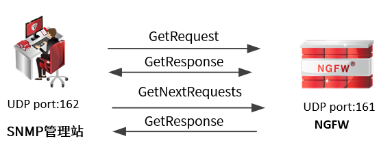
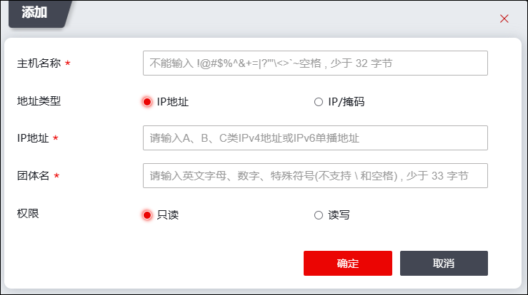

SNMP采用C/S架构，管理站使用知名端口号162接收Trap消息及报警消息，客户端使用知名端口号161接收查询设备信息。网络管理员通过SNMP管理主机管理NGFW的原理图如下。

网络管理员通过管理主机查询NGFW的操作命令说明如下：
| l | GetRequest：管理站向网络设备某功能节点发起“读”请求，获取设备某功能节点的配置信息或实时状态信息。 |
| l | GetNextRequests：管理站向网络设备某功能节点发起“读”请求，在GetRequest的基础上获取其相邻另一个功能节点的配置信息或实时状态信息。 |
| l | GetResponse：网络设备响应管理站发起的GetRequest、GetNextRequests操作。 |
管理主机安装SNMP管理软件并导入了公有MIB库或TOPSEC MIB库后，还需要在NGFW上添加管理主机信息。
配置管理主机信息的详细操作如下。
| 步骤1 | 选择 V1V2主机。 |
| 步骤2 | 激活“SNMP V1V2管理主机”页签，再点击“添加”，弹出窗口界面如下图所示。 |

在添加SNMP管理主机时，各项参数的具体说明如下表所示。
参数 |
说明 |
|---|---|
主机名称 |
必填项，配置该管理主机的名称。 |
地址类型 |
设置管理主机的类型，可选项：IP地址和IP/掩码。 “IP地址”指设定SNMP Manager为一台主机；“IP/掩码”指设定SNMP Manager为一个IP/掩码，该子网内的主机都可以配置为SNMP管理主机。 说明： 1）当管理主机只有一个时，需要添加“主机”类型的管理主机对象； 2）当管理主机具有多个且正好位于一个子网时，可以添加多个“主机”类型的管理主机对象，也可以添加一个“IP/掩码”类型的管理主机对象。 |
IP地址 |
必填项。管理主机类型选择“IP地址”时，用于指定SNMP管理主机对象的IP地址；管理主机类型选择“IP/掩码”时，用于指定SNMP管理子网对象的子网地址及其掩码。 |
团体名 |
必填项，指定SNMP管理主机访问NGFW时的团体名。 说明： SNMPv1和SNMPv2c的管理主机与设备使用团体名认证，所以管理主机端配置的团体名必须与此处设置的团体名一致，否则网络管理员不能通过管理主机管理NGFW。 |
权限 |
设置VIV2主机权限，必选项：只读、读写。 |
| 步骤3 | 点击【确定】按钮完成管理主机对象的添加。 |